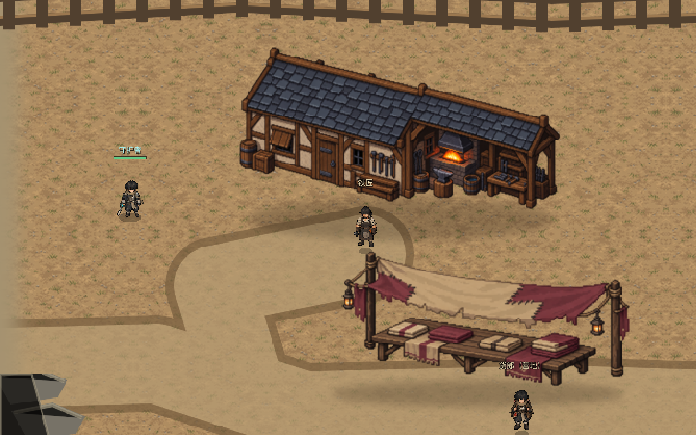
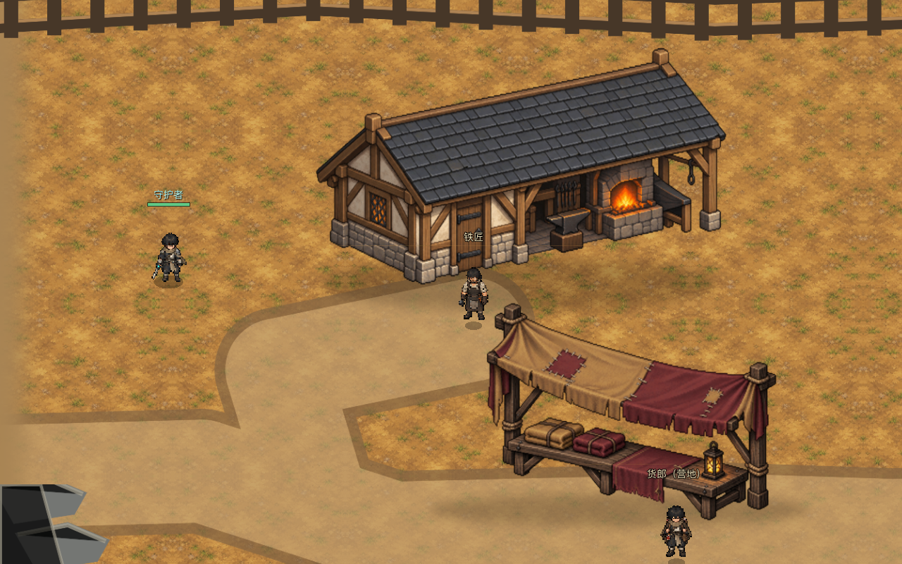
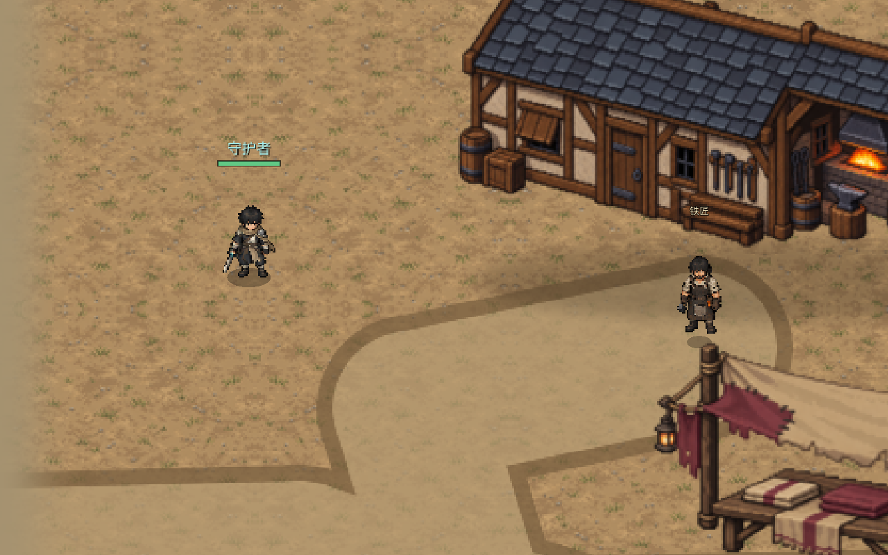
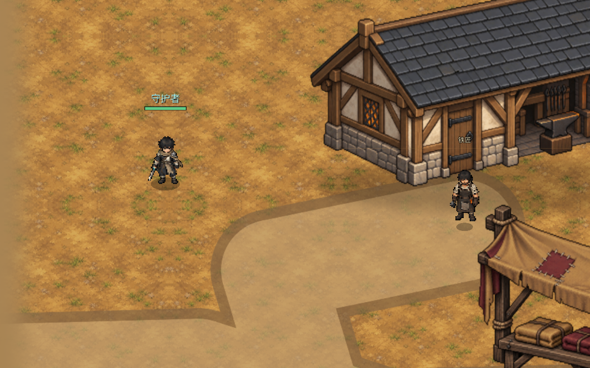
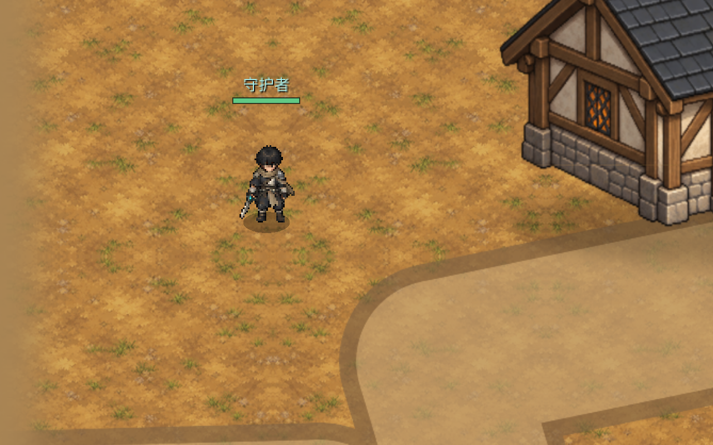
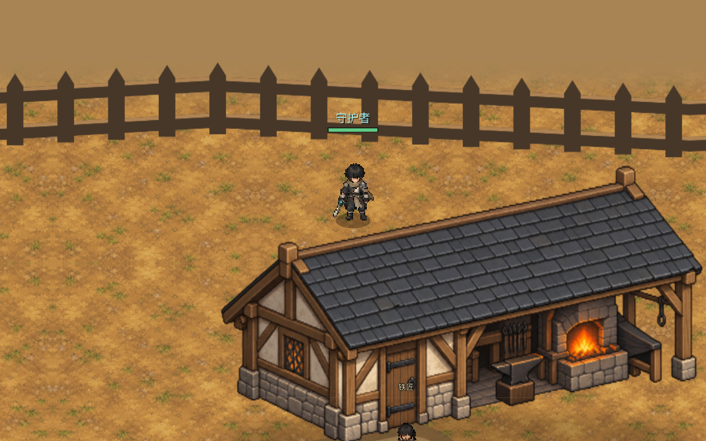
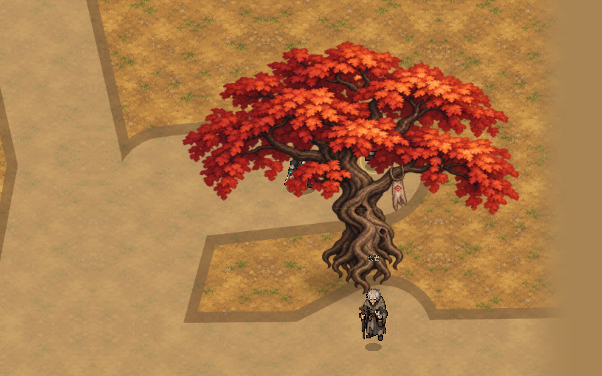
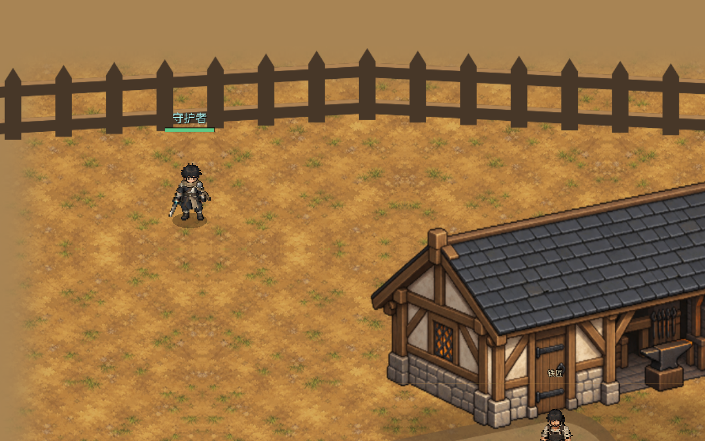
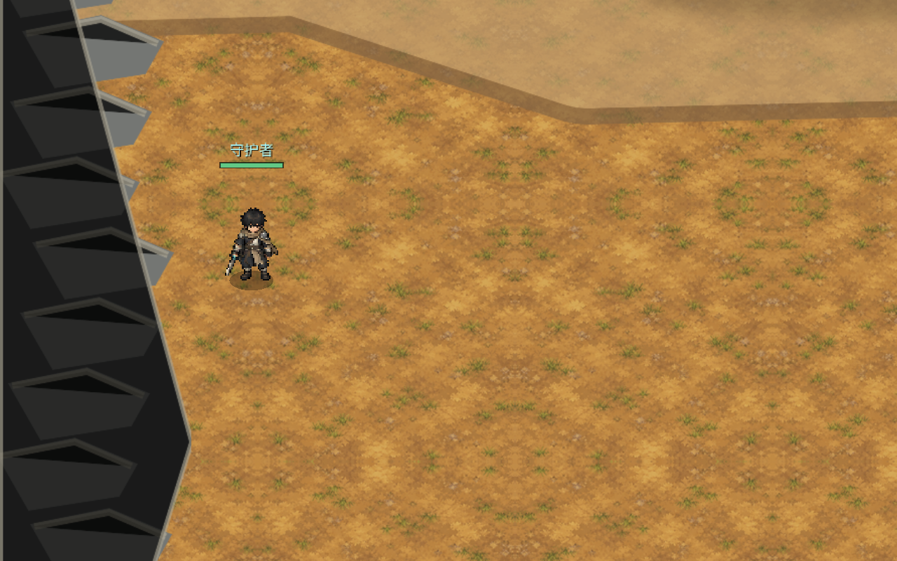
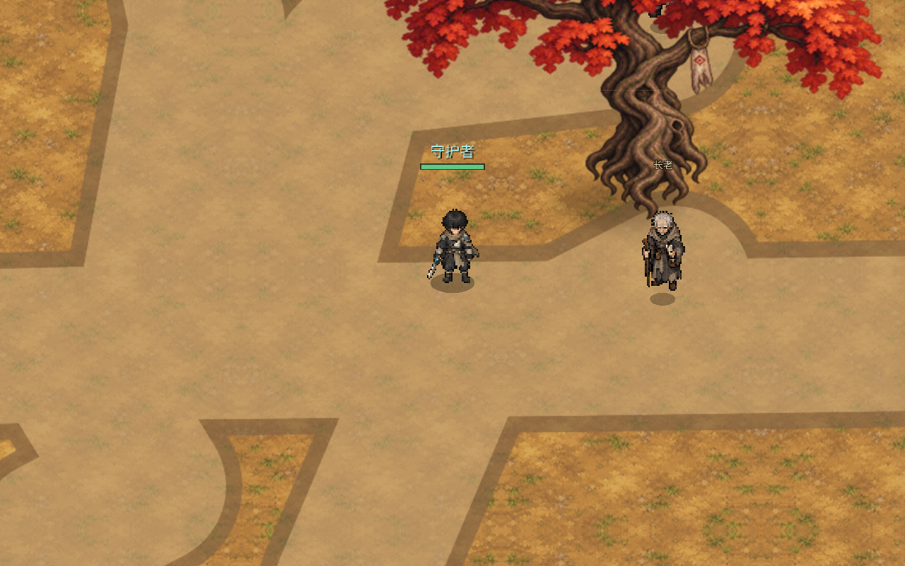

① A / B 同镜头对照（100% 地图倍率）
A 是低源像素对照，B 是目标方向。两者在同一坐标、同一角色站位、同一相机下渲染，便于直接比较屋瓦、木梁、树冠的笔触与边界完整性。


② 倍率清晰度（验收记录观察项①）
B 的屋瓦、木梁和树冠在 200% 下边界仍明显比 A 完整；A 的建筑和地纹在 200% 下变粗、发软。B 的地纹细节偏多，200% 下与像素人物笔触差异明显，下一轮应降噪。



③ 建筑 / 树 / 栅栏 / 岩石 前后侧与遮挡（验收记录观察项②）
铁匠铺屋顶位于独立前沿层，后侧角色不会压到屋顶上；长老树后侧角色被树冠遮住，前侧 NPC 完整可见。北侧连续栅栏与西侧岩带的可达侧没有角色叠上实体顶面。




④ 整体实体参考
长老树整体在 150% 下的呈现，用于检查树冠笔触与环境统一度。
